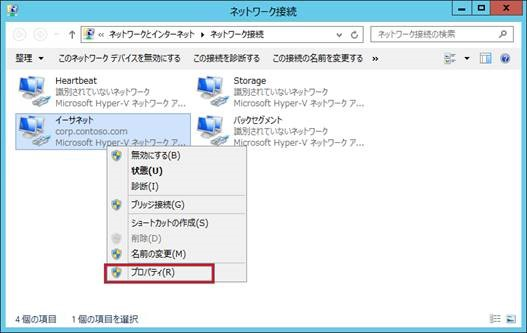
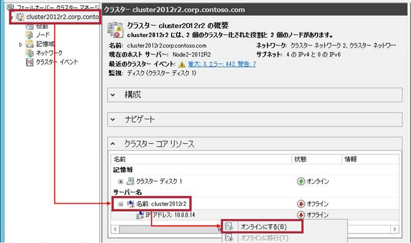

※ 本記事は弊社の Technet のサイトから移行した記事です。
いつも弊社製品をご利用いただきまして誠にありがとうございます。日本マイクロソフトの Windows サポートチームです。
本日は、クラスター環境の IP アドレス変更手順についてご紹介いたします。
クラスター環境の移行をおこなう場合など、クラスターを構成している各ノードの物理 IP アドレスと、クラスター上で稼働しているアプリケーションに紐づく仮想 IP アドレスを変更する必要がある場合があります。その際、クラスター環境の IP アドレス変更については、以下の 3 種類の IP アドレスの変更を検討していただく必要があります。
物理 IP アドレス :
・クラスター構成ノード ( 物理サーバー ) の IP アドレス
仮想 IP アドレス :
・クラスター管理用 ( クラスター コア リソース ) の仮想 IP アドレス
・クラスター化されたアプリケーションの仮想 IP アドレス
今回は上記 3 つの IP アドレスの変更の順番と、変更方法についてご案内したいと思います。
※ 注意点 ※
クラスター環境構成後はドメイン移行、物理ホスト名の変更はサポートしておりません。
変更が必要となる場合には、一度クラスターを解除する必要があります。
仮想 IP の変更を行う場合、クラスター化されたアプリケーションの設定も変更が必要な場合があります。
詳細につきましてはご利用のアプリケーションの提供元様にご確認ください。
フェールオーバークラスター の IP アドレスの変更手順についてご案内します。
設定手順は以下の順番で行います。
- クラスター サービスの停止
- クラスター構成ノード ( 物理サーバー ) の IP アドレス変更
- クラスター管理用 ( クラスター コア リソース ) の IP アドレス変更
- クラスター化されたアプリケーションの IP アドレス変更
1) クラスター サービスの停止方法
クラスターの IP アドレスを変更するには、 [ クラスター コア リソース ] と、クラスター上で稼働している各種アプリケーションを停止した上で、クラスター サービスを停止する必要があります。
※ [ クラスター コア リソース ] と、クラスター上で稼働している各種アプリケーションを停止する理由は、不要なクラスター リソースの失敗やエラーの検知を避けて、変更が完了したものから順番に起動することで、正常にオンラインになるかを確認する為です。
1-1. [ フェールオーバー クラスター マネージャー ] を開きます。
1-2. 左側のウィンドウから [ クラスター名 ] を選択した後、中央ウィンドウの [ クラスター コア リソース ] を展開します。 [ サーバー名 ] を展開し、 [IP アドレス : XXX.XXX.XXX.XXX] を右クリックし、 [ オフラインに移行 ] を選択します。
1-3. 左側のウィンドウから [ 役割 ] を展開し、登録されているグループを、右クリックし、 [ 役割の停止 ] を選択します。 ※この手順で、役割に登録されている全てのグループを停止してください。
1-4. 左側のウィンドウから [ クラスター名 ] を 右クリックし、 [ 他のアクション ] より [ クラスターのシャットダウン ] を選択し、クラスターを停止させます。
以上で、クラスター サービスの停止は完了です。
2) クラスター構成ノード ( 物理サーバー ) の IP アドレス変更手順
IP アドレスを変更するノード ( 物理サーバー ) にログインし、以下の手順を各ノード上で実施します。
2-1. [ ネットワークと共有センター ] を開き、 [ アダプタ―の設定の変更 ] から [ ネットワーク接続 ] の画面に進みます。 IP アドレスを変更するネットワーク アダプタを右クリックし、表示されたメニューから [ プロパティ ] を選択します。

2-2. 中央の “ この接続は次の項目を使用します ” の一覧から、変更する IP [TCP/IPv4] または [TCP/IPv6] を選択し、 [ プロパティ ] をクリックします。
2-3. [ 次の IP アドレスを使う ] または [ 次の IPv6 アドレスを使う ] がチェックされた状態で、 IP アドレスを設定し [OK] をクリックします。
以上で、クラスター構成ノード ( 物理サーバー ) の IP アドレス変更は完了です。
–- 補足 ——
なお、本手順によってセグメントの変更されると、クラスターに登録されているネットワーク名が、規定の「クラスター ネットワーク 1 」などに変更され、ネットワークのオプションが「クラスターのみ」となる場合がございます。その際は、ネットワークのサブネットをご確認の上、適切なネットワークの設定を再度おこなってください
<参考> フェールオーバー クラスターのネットワーク設定を変更する
https://technet.microsoft.com/ja-jp/library/cc725775.aspx
また、変更したネットワークがフェールオーバー クラスター マネージャー上から見えていない場合には、上記手順 2-1. から変更したネットワークを右クリックし、 [ 無効 ] にしていただき、再度 [ 有効 ] を選択してください。同時に、一度フェールオーバー クラスター マネージャーを閉じていただき、再度開いていただくことで最新の情報が反映されます。
3) クラスター管理用 ( クラスター コア リソース ) の IP アドレス変更手順
物理 IP アドレスの変更後に、 [ フェールオーバー クラスター マネージャー ] から仮想 IP アドレスの変更を実施します。
3-1. [ フェールオーバー クラスター マネージャー ] の左側のウィンドウから [ クラスター名 ] を右クリックし、 [ クラスターの起動 ] を選択し、クラスター サービスを起動します。
※もし [ クラスター名 ] が表示されていない場合は、中央ウィンドウの “ 管理 ” から [ クラスターに接続する ] を選択し [OK] を押すと、クラスターに接続を開始します。接続完了後、左側のウィンドウに [ クラスター名 ] が表示されます。
3-2. 左側のウィンドウから [ クラスター名 ] を選択した後、中央ウィンドウの [ クラスター コア リソース ] を展開します。 [ サーバー名 ] を展開し、 [IP アドレス : XXX.XXX.XXX.XXX] を右クリックし、 [ プロパティ ] を選択します。
3-3. [ 全般 ] タブから [ ネットワーク ] のリストから使用するサブネットを選択し、 [ 静的 IP アドレス ] の項目から使用する IP アドレスを設定し、 [ 適用 ] を選択した後、 [OK] を選択します。
3-4. 中央ウィンドウの [ クラスター コア リソース ] 内の [ サーバー名 ] を右クリックし、 [ オンラインにする ] を選択し、変更した IP アドレス リソースが正常にオンラインになることを確認します。

以上で、クラスター管理用 ( クラスター コア リソース ) の IP アドレス変更は完了です。
4) クラスター化されたアプリケーションの IP アドレス変更手順
上記、クラスター コア リソースの IP アドレス変更手順と同じ手順で、変更が必要な全てのアプリケーションの仮想 IP アドレスの変更を実施します。
4-1. [ フェールオーバー クラスター マネージャー ] の左側のウィンドウから [ 役割 ] を選択し、登録されているグループを選択します。下の [ リソース ] タブを選択し、変更したい [IP アドレス : XXX.XXX.XXX.XXX] をダブルクリックします。
4-2. [ 全般 ] タブから [ ネットワーク ] のリストから使用するサブネットを選択し、 [ 静的 IP アドレス ] の項目から使用する IP アドレスを設定し、 [ 適用 ] を選択した後、 [ OK ] を選択します。
4-3. 変更した IP アドレス リソースが紐づくアプリケーションを右クリックし、 [ オンラインにする ] を選択します。 登録されているアプリケーションが正常にオンラインになることをご確認ください。
上記変更方法を参考に、変更が必要な全てのアプリケーションの仮想 IP アドレスの変更を実施してください。
以上の手順でクラスターの IP アドレスの変更の全てが完了です。
– クラスター構成の確認
以上の手順を実施した後、変更を行った IP アドレス リソースが正常にオンラインになっているかをご確認いただき、通信に問題はないか、またイベント ログにエラーが出ていないかをご確認ください。
※アドレスの変更に伴って、 IP アドレスのエラー (FailoverClustering ID:1069) や通信の切断を示す (FailoverClustering ID:1123) などが発生する可能性があります。 IP アドレスに関するエラーについても、作業完了後に発生したエラーでなければ問題は無いので、ご安心ください。
また、クラスター構成を変更した後は構成の検証を行いクラスターが正常に動作しているかご確認ください。クラスターの検証については、左側ウィンドウの [ クラスター名 ] を右クリックし、 [ クラスターの検証 ] から実施することが出来ます。
<参考> フェールオーバー クラスター構成の検証
https://technet.microsoft.com/ja-jp/library/cc772055.aspx
いかがでしたでしょうか。本投稿が少しでも皆様のお役に立てば幸いです。
(※ 2016 年 1 月 31 日に Ask Core Microsoft Japan Windows Technology Support に公開した情報のアーカイブです。)